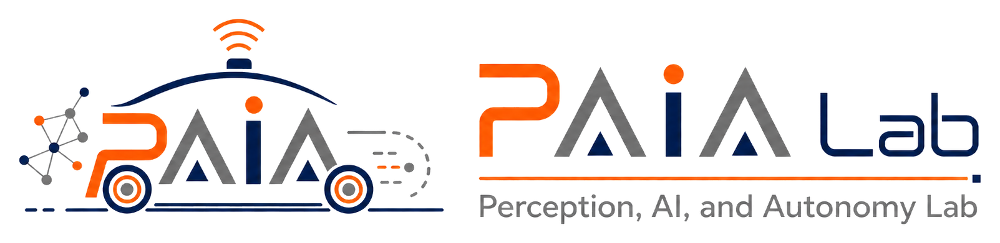

PI award from Maryland DOT SHA
Awarded a $150K research project as PI through M-TRAIL, funded by the Maryland Department of Transportation SHA.

Department of Electrical and Computer Engineering · UTRGV
The Perception, AI, and Autonomy Lab (PAIA Lab) is in the Department of Electrical and Computer Engineering at The University of Texas Rio Grande Valley. We build the scientific and computational foundations for reliable autonomous intelligence in the physical world.
Autonomy is not merely a perception problem. It is a closed-loop challenge: machines must sense uncertain environments, understand evolving situations, and make timely decisions with imperfect information. Our work advances the perception–understanding–decision loop by unifying multi-sensor fusion, reliability-aware perception, multimodal deep learning, and AI foundation models with downstream prediction, control, and planning.
The central question that drives the lab is: How can autonomous systems perceive, reason, and act reliably when the world is noisy, dynamic, and only partially observable?

Awarded a $150K research project as PI through M-TRAIL, funded by the Maryland Department of Transportation SHA.
CalibRefine accepted to IEEE Transactions on Instrumentation and Measurement.
Radar-camera fused multi-object tracking accepted to IEEE Transactions on Intelligent Transportation Systems.
Dr. Lei Cheng joined the University of Maryland, College Park as a Faculty Assistant in CEE / MTI.
Reliable multimodal perception that turns Camera, Radar, LiDAR, and GNSS observations into robust situational awareness, even when sensors degrade.
Foundation-model-enabled autonomy that unifies vision, geometry, motion, language, and semantics into physically grounded representations.
Risk-aware prediction, control, and planning that translates perception and uncertainty into safer decisions for driving, robotics, and transportation.
We gratefully acknowledge the agencies and industry partners that have supported research projects the PI has contributed to.